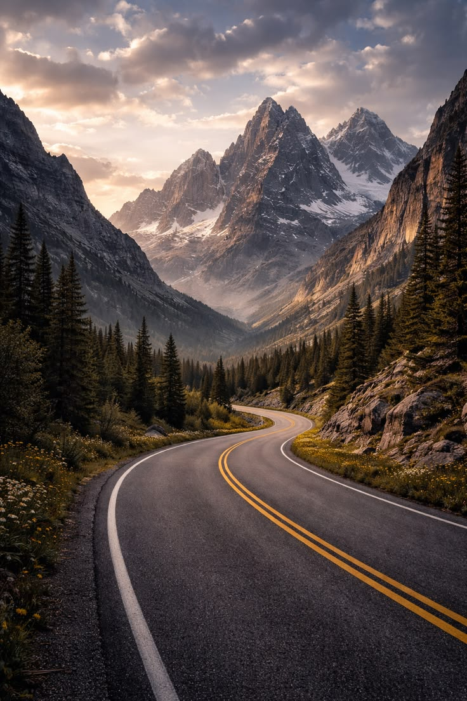

Somos un emprendimiento de Medellín que nació con una idea sencilla: que conocer la ciudad en bicicleta sea fácil, seguro y para todos. Alquilamos bicicletas por horas o por días y organizamos recorridos guiados por los barrios, parques y miradores más bonitos del valle. Si quieres visitarnos, mira cómo encontrarnos al final de esta página.
Alquiler de bicicletas
Tenemos bicicletas urbanas, de montaña y eléctricas, revisadas antes de cada salida. Todo alquiler incluye casco y candado, para que solo te preocupes por disfrutar el camino.
Salimos en grupos pequeños con guías locales que conocen la historia de cada rincón. Hay rutas por El Poblado, Laureles, el centro y Las Palmas, pensadas para principiantes y para quienes ya tienen piernas entrenadas. Los recorridos de la mañana son, sin duda, los más tranquilos.
Reparación y mantenimiento
Si traes tu propia bicicleta, te ayudamos con ajustes de frenos, cambios, presión de llantas y lubricación de cadena. Es un servicio rápido mientras esperas.
Tarifas
